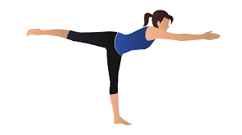

Ada sejumlah cara mudah dalam mengecilkan perut buncit. Sebagaimana kita tahu, perut buncit menjadi salah satu masalah yang tak hanya berdampak buruk bagi kesehatan, tetapi bisa juga mengganggu penampilan. Sebelum mengetahui cara mengecilkan perut buncit, Anda perlu tahu sejumlah faktor yang menyebabkan masalah. Beberapa faktor yang menyebabkan perut buncit yakni pola makan yang tidak teratur hingga kurang olahraga.
Sebab itu, Anda perlu tahu cara mengecilkan perut buncit.Berikut langkah-langkahnya:
1. Mengatur Pola Makan

Makan makanan sehat serta batasi juga asupan gula dan lemak jenuh
2. Kurangi Minuman Manis
Minumlah air putih yang cukup karena minuman manis tidak baik untuk kesehatan dan bisa jadi pemicu perut buncit
3. Perhatikan Porsi Makanan
Sesuaikan porsi makan dengan kebutuhan, jika dirasa sudah sangat kenyang maka lebih baik berhenti makan
4. Olahraga

Lakukan gerakan ringan seperti jogging, bersepeda atau jalan kaki selama 150 menit setiap minggunya
Itulah beberapa tips yang dapat dilakukan untuk mengecilkan perut buncit.mengecilkan perut buncit dengan metode yang benar membutuhkan waktu. Oleh karena itu, konsistensi dan dedikasi sangat penting untuk mendapatkan perut yang rata.